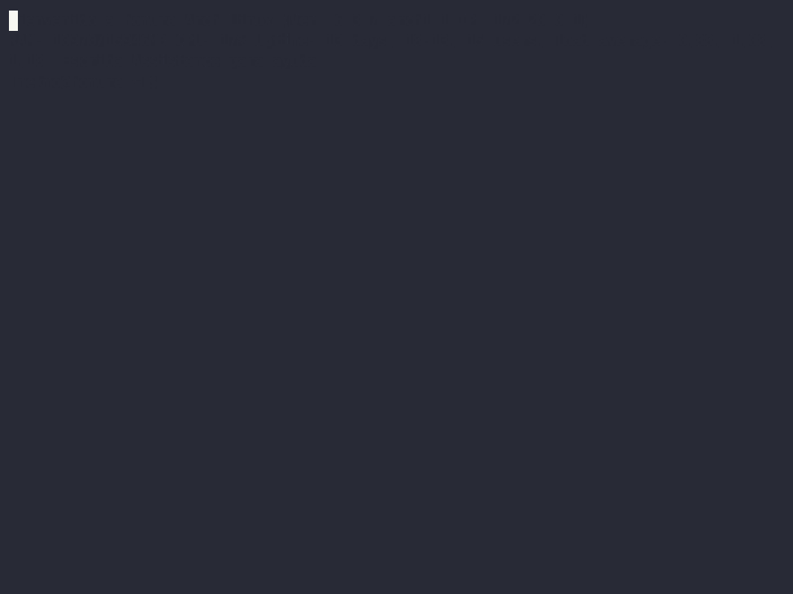

Usage¶
pip-rating¶
Are the dependencies (and their dependencies) of your project secure and maintained? Running this command without arguments detects the dependencies file of your project (it supports requirements.in, requirements.txt, setup.py, setup.cfg, Pipenv and pyproject.toml) and analyzes it.
If your file is not detected (or you want to parse another file, like your development dependencies)
you can use the analyze-file command.
pip-rating [OPTIONS] COMMAND [ARGS]...
Options
- -v, --version¶
Show version and exit.
analyze-file¶
Analyze a requirements file. A requirements file is required as argument. By default, it tries to detect the
type of the file, but you can force it using the --file-type option. The supported file types are:
requirements.txt, requirements.in, setup.py, setup.cfg, Pipfile and pyproject.toml.
pip-rating analyze-file [OPTIONS] FILE
Options
- --file-type <file_type>¶
- Options:
requirements | setup.cfg | setup.py | Pipfile | pyproject.toml
- --ignore-package <ignore_packages>¶
Ignore a package. You can use this option multiple times.
- --to-file <to_file>¶
Output file. By default output to console.
- -f, --format <format_name>¶
Output format. Supported formats: text, tree, json, only-rating, badge. By default it uses ‘text’.
- Options:
text | tree | json | only-rating | badge
- --extra-index-url <extra_index_url>¶
Extra URLs of package indexes to use in addition to –index-url.
- --index-url <index_url>¶
Base URL of the Python Package Index (default https://pypi.org/simple).
- --cache-dir <cache_dir>¶
Use a custom cache dir.
Arguments
- FILE¶
Required argument
Environment variables
- PIP_CACHE_DIR
Provide a default for
--cache-dir
analyze-package¶
Analyze a package. A package name is required as argument. The syntax is the same as pip install. For example:
Django==4.2.3. If only one package is specified, it will show their dependencies in detail.
pip-rating analyze-package [OPTIONS] PACKAGE_NAMES...
Options
- --ignore-package <ignore_packages>¶
Ignore a package. You can use this option multiple times.
- --to-file <to_file>¶
Output file. By default output to console.
- -f, --format <format_name>¶
Output format. Supported formats: text, tree, json, only-rating, badge. By default it uses ‘text’.
- Options:
text | tree | json | only-rating | badge
- --extra-index-url <extra_index_url>¶
Extra URLs of package indexes to use in addition to –index-url.
- --index-url <index_url>¶
Base URL of the Python Package Index (default https://pypi.org/simple).
- --cache-dir <cache_dir>¶
Use a custom cache dir.
Arguments
- PACKAGE_NAMES¶
Required argument(s)
Environment variables
- PIP_CACHE_DIR
Provide a default for
--cache-dir
Formats¶
Using the --format option, you can specify the output format. The default is text.
Text¶
The text format is a simple, human-readable format. It is the default format. Using this format all direct dependencies are described. If there are indirect dependencies that lower the rating, they are indicated in the description.
Tree¶
The tree format list all direct dependencies and their direct dependencies. The rating is indicated by each dependency. Note that a dependency can appear multiple times. This is because a dependency can be a direct dependency of multiple other dependencies. However, each dependency can be resolved as different versions. It may happen that one resolved version is vulnerable but another is not, with the same package having different ratings.
json¶
Output as json for processing by other programs. It has more information than the other formats. This is a sample:
{
"requirements": [
"mypackage"
],
"updated_at": "2023-07-11T18:04:44.203333",
"schema_version": "2.31.0",
"global_rating_letter": "F",
"global_rating_score": 0,
"packages": [
{
"name": "mypackage",
"version": "0.7.0",
"sourcerank_breakdown": {
"basic_info_present": 1,
"source_repository_present": 1,
"readme_present": 1,
"license_present": 1,
"has_multiple_versions": 1,
"follows_semver": 1,
"recent_release": 1,
"not_brand_new": 1,
"is_1_or_greater": 0,
"dependent_projects": 0,
"dependent_repositories": 0,
"stars": 3,
"contributors": 1,
"librariesio_subscribers": 0,
"total": 12
},
"pypi_package": {
"info": {
"author": "user",
"author_email": "user@domain",
"bugtrack_url": null,
"classifiers": [
"Development Status :: 5 - Production/Stable",
"License :: OSI Approved :: MIT License",
"Natural Language :: English",
"Operating System :: POSIX",
"Operating System :: POSIX :: Linux",
"Programming Language :: Python :: 3 :: Only",
"Programming Language :: Python :: 3.10",
"Programming Language :: Python :: 3.11",
"Programming Language :: Python :: 3.7",
"Programming Language :: Python :: 3.8",
"Programming Language :: Python :: 3.9"
],
"description": "",
"description_content_type": "",
"docs_url": null,
"download_url": "https://github.com/user/mypackage/archive/master.zip",
"downloads": {
"last_day": -1,
"last_month": -1,
"last_week": -1
},
"home_page": "https://github.com/user/mypackage/",
"keywords": "mypackage,keyword2",
"license": "",
"maintainer": "",
"maintainer_email": "",
"name": "mypackage",
"package_url": "https://pypi.org/project/mypackage/",
"platform": "linux",
"project_url": "https://pypi.org/project/mypackage/",
"project_urls": {
"Download": "https://github.com/user/mypackage/archive/master.zip",
"Homepage": "https://github.com/user/mypackage/"
},
"release_url": "https://pypi.org/project/mypackage/0.7.0/",
"requires_dist": [
"telethon",
"click (>=6.0)",
"cryptg",
"hachoir",
"prompt-toolkit",
"pysocks",
"more-itertools",
"scandir ; python_version < \"3.6\""
],
"requires_python": "",
"summary": "summary",
"version": "0.7.0",
"yanked": false,
"yanked_reason": null
},
"last_serial": 18697836,
"releases": {
"0.1.0": [
{
"comment_text": "",
"digests": {
"blake2b_256": "...",
"md5": "...",
"sha256": "..."
},
"downloads": -1,
"filename": "mypackage-0.1.0.tar.gz",
"has_sig": false,
"md5_digest": "...",
"packagetype": "sdist",
"python_version": "source",
"requires_python": null,
"size": 14097,
"upload_time": "2018-03-26T16:23:20",
"upload_time_iso_8601": "2018-03-26T16:23:20.017410Z",
"url": "https://files.pythonhosted.org/.../mypackage-0.1.0.tar.gz",
"yanked": false,
"yanked_reason": null
}
],
},
"urls": [],
"vulnerabilities": []
},
"audit_vulnerabilities": [],
"rating": {
"rating_score": 20,
"global_rating_score": 0,
"vulnerabilities": [],
"params": {
"sourcerank_breakdown": {
"basic_info_present": 1,
"source_repository_present": 1,
"readme_present": 1,
"license_present": 1,
"has_multiple_versions": 1,
"follows_semver": 1,
"recent_release": 1,
"not_brand_new": 1,
"is_1_or_greater": 0,
"dependent_projects": 0,
"dependent_repositories": 0,
"stars": 3,
"contributors": 1,
"librariesio_subscribers": 0,
"total": 12
},
"pypi_package": {
"latest_upload_iso_dt": "2023-06-29T16:28:00.138582Z",
"first_upload_iso_dt": "2018-03-26T16:23:20.017410Z"
},
"sourcecode_page": {
"package_in_readme": true
}
}
},
"dependencies": [
{
"name:" "subdependency",
"version": "1.0.0",
"sourcerank_breakdown": {},
"pypi_package": {},
"audit_vulnerabilities": [],
"rating": {},
"dependencies": []
}
]
}
Only-rating¶
This only returns the rating. It is useful for automation or to be used by other applications. Possible outputs: S, A, B, C, D, E, F.
Badge¶
Generates a badge with the rating as a svg image. You can use it in your README file. The image can be customized using environment variables:
Variable |
Description |
|---|---|
|
The style of the badge. Possible values: |
|
Background color for the S rating. Default: |
|
Background color for the A rating. Default: |
|
Background color for the B rating. Default: |
|
Background color for the C rating. Default: |
|
Background color for the D rating. Default: |
|
Background color for the E rating. Default: |
|
Background color for the F rating. Default: |
Some examples of the different styles:
Name |
Example |
|---|---|
|
|
|
|
|
For example, to generate a badge with the flat-square style:
$ PIP_RATING_BADGE_STYLE=flat-square pip-rating analyze-package --format badge requests
Or exporting the variable:
$ export PIP_RATING_BADGE_STYLE=flat-square
$ pip-rating analyze-package --format badge requests
By default the image is printed to Stdout. You can save it to a file using the --to-file option. For example:
$ pip-rating analyze-package --format badge --to-file badge.svg requests
The badges are based on shields.io badges, but the badges are generated locally, so you don’t need to have an internet connection to generate them.
New in version 0.2: The badge format was added.
Output to file¶
You can output the results to a file using the --to-file option. For example:
$ pip-rating analyze-file --format json --to-file results.json requirements.txt
You can also redirect Stdout’s exit from the program to a file. For example:
$ pip-rating analyze-file --format json requirements.txt > results.json
pip-rating shows the progress of the execution using the Stderr output, so the progress of the execution will not be displayed in the output file.
New in version 0.2: The --to-file option was added & the progress of the execution is redirected to Stderr.
Ignore packages¶
You can ignore packages using the --ignore-package option. You can specify multiple packages by using the option
multiple times. For example:
$ pip-rating analyze-file --ignore-package mypackage --ignore-package mypackage2 requirements.txt
Ignored packages will not be analyzed and their dependencies will not be parsed. The dependencies of the ignore package will be analyzed if they are in the requirements file or if it is a dependency of another package.